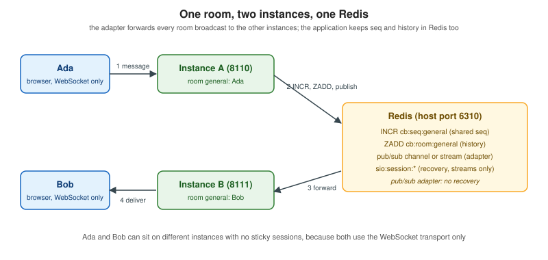

Socket.IO (Node.js)
|
This content was generated with the assistance of AI and should be verified against the official documentation before being relied on in production. |
Socket.IO is a real-time messaging library with a Node.js server and clients for the browser, Node.js and several other languages. It is not a WebSocket implementation: it runs its own protocol on top of Engine.IO, which uses WebSocket (or HTTP long-polling, or WebTransport) as the transport. This page covers the Node.js server end to end and implements the Chatterbox v1 protocol of Message Design and Serialization with it, running on two instances that share a Redis.
The page was written against socket.io and socket.io-client 4.8.4 (npm, September 2026), @socket.io/redis-adapter
8.3.0, @socket.io/redis-streams-adapter 0.3.1, @socket.io/admin-ui 0.5.1, redis (node-redis) 6.3.0, Node.js 24 and
Redis 8.8.3. Everything was checked on 2026-10-24. The browser client, the Engine.IO and Socket.IO wire protocols,
reconnection options and the other-language clients are on Socket.IO Protocol and Clients; the Python server
is on python-socketio. For the Node.js basics (the ws library, upgrade handling, Server-Sent Events) see
WebSockets and Server-Sent Events, and for Socket.IO inside a NestJS application (gateways and the
Socket.IO adapters of Nest) see NestJS WebSockets.
Which scenarios use it
-
Chatterbox is the natural fit: rooms, acknowledgements, reconnection with replay and a Redis backplane are built in, which is why the example below is short compared with a hand-written
wsserver. -
Huddle can use it as the signalling channel: join a room, relay offers, answers and ICE candidates to a peer id (see Signaling and Perfect Negotiation). It never carries media.
-
Pixel Arena can use it for lobbies and slow state, and
volatileevents for position updates that may be dropped. A fixed-tick authoritative loop with binary snapshots usually prefers a plain WebSocket server or Colyseus (see Game Servers and Colyseus).
What Socket.IO adds to a WebSocket
| Feature | Meaning |
|---|---|
Named events with any number of arguments |
|
Acknowledgements |
A function as the last argument is called with the other side’s reply; |
Namespaces and rooms |
Two levels of multiplexing over one connection, described below. |
Heartbeat and reconnection |
The server pings every |
Fallback transports |
HTTP long-polling first, then an upgrade to WebSocket. This is the reason sticky sessions exist. |
Adapters |
Pluggable room and broadcast engines (in memory, Redis, Redis Streams, Postgres, MongoDB, cluster). |
Connection state recovery |
Optional restore of the socket id, rooms, data and missed events after a short disconnection. |
The price is that a plain WebSocket client cannot talk to a Socket.IO server and vice versa, and that every message
has Socket.IO framing. The delivery guarantees are modest: events from one connection arrive in order, but the default
is at most once, the server does not buffer for a disconnected client, and the retries client option gives at-least-once only for
client-to-server events. Anything stronger (unique ids, durable storage, offsets) is up to the application, which is
exactly what the Chatterbox ids and seq provide.
Creating a server
A Server is created with an options object and attached to an HTTP server, to a port, or used standalone. It can share
the HTTP server with Express or Fastify; the framework handles ordinary requests and Socket.IO takes the /socket.io/
path.
import { createServer } from 'node:http';
import express from 'express';
import Fastify from 'fastify';
import { Server } from 'socket.io';
// Express: Socket.IO attaches to the same http.Server.
const app = express();
app.get('/healthz', (req, res) => res.send('ok'));
const httpServer = createServer(app);
const io = new Server(httpServer, { /* options */ });
httpServer.listen(3000);
// Fastify: attach to fastify.server once the instance is ready.
const fastify = Fastify();
await fastify.ready();
const io2 = new Server(fastify.server);
await fastify.listen({ port: 3001 });
// Standalone: Socket.IO creates its own HTTP server.
const io3 = new Server(3002);The options that matter in production:
| Option | Default | Notes |
|---|---|---|
|
25000 ms, 20000 ms |
A proxy’s idle timeout (nginx |
|
1e6 (1 MB) |
Largest packet in bytes. A bigger packet closes the socket; the example sets 16384 to mirror the Chatterbox frame limit. |
|
45000 ms |
How long a client may take to be admitted to a namespace. |
|
|
|
|
none |
Called for every handshake and upgrade; the place for an |
|
none |
Options for the |
|
|
Client and server must agree unless a proxy rewrites it. |
|
|
Compression of WebSocket frames. Costs CPU and memory per connection and has the length-oracle risk described on The WebSocket Protocol. |
|
off |
See the section below. |
|
in memory |
See the adapters section. |
|
|
Serves the browser bundle at |
Source: Socket.IO docs: Server options
Namespaces, rooms and the connection
A single Engine.IO connection carries any number of namespaces, each a separate channel with its own event handlers,
middleware, rooms and adapter. The default namespace is /. A room exists inside one namespace and is only a
server-side set of sockets; clients cannot list or join rooms by themselves, so a join event handler on the server
must decide who may enter. Every socket automatically joins a room named after its own socket.id, which is how
io.to(socketId).emit() sends to one client from anywhere.
Namespaces are a good fit for separating concerns with different authentication (an operator namespace next to the chat
namespace), and a poor fit for modelling chat rooms: a client that opens a Socket.IO connection per room multiplexes
them over one transport, but each namespace has its own handshake, middleware run and connect event. Chatterbox
rooms are therefore Socket.IO rooms in the default namespace. Dynamic namespaces (a regular expression or a function
passed to io.of()) create namespaces on demand, and the cleanupEmptyChildNamespaces option removes them again.
// Rooms, socket.data and the emit variants (inside io.on('connection', ...)).
io.on('connection', (socket) => {
socket.data.user = { name: 'ada' }; // per-socket state; fetchSockets() returns it cluster-wide
socket.join('general'); // idempotent; also: socket.leave('general')
io.to('general').emit('news', 1); // everyone in the room, sender included
socket.to('general').emit('news', 2); // everyone in the room except this socket
io.to('general').except('dm-ada-bob').emit('news', 3); // union of rooms minus another room
socket.broadcast.emit('news', 4); // every socket of the namespace except this one
socket.volatile.emit('position', { x: 1, y: 2 }); // dropped when the transport is not writable
io.local.emit('news', 5); // only the sockets connected to this Node.js process
io.compress(false).emit('blob', Buffer.alloc(1024)); // skip permessage-deflate for this packet
});
// From anywhere in the process (or the cluster, with an adapter):
const sockets = await io.in('general').fetchSockets(); // RemoteSocket objects with id, rooms, data
io.in('general').socketsJoin('archive'); // move every member to another room
io.in('dm-ada-bob').disconnectSockets(true); // close themSource: Socket.IO docs: Rooms and Broadcasting events
Acknowledgements and timeouts
An acknowledgement is a callback passed as the last argument of emit; the receiver calls it, and its arguments return to the sender.
Since 4.6.0 emitWithAck() returns a promise, and timeout(ms) makes the call reject (or pass an error as first callback argument) when no
acknowledgement arrives. A broadcast through io.timeout(ms) collects one answer per client and, with several
instances, per instance. An event emitted without a callback on one side and listened to with a callback on the other
receives undefined for that callback, so a server must never trust it to be a function.
// Server
io.on('connection', (socket) => {
socket.on('rename', (name, callback) => {
if (typeof callback !== 'function') return; // an untrusted client may omit it
callback({ ok: true, name: String(name).slice(0, 32) });
});
});
// Client (Node.js or browser)
const reply = await socket.timeout(5000).emitWithAck('rename', 'ada');
// Server asking a client, with a deadline; rejects when the client does not answer.
const answer = await socket.timeout(1000).emitWithAck('confirm', 'quit?');
// Many clients: an array of answers, rejecting if any one is missing.
const answers = await io.in('general').timeout(1000).emitWithAck('poll', 'ready?');Source: Socket.IO docs: Emitting events
Socket.IO acknowledgements are per event and carry no identity. The Chatterbox ack and error envelopes are
deliberately independent of them: they are ordinary events that name the request in ref, so the same protocol works over
every stack, survives a reconnection and is idempotent through the envelope id. Use native acknowledgements for
internal request/response calls, and the Chatterbox envelope for anything that must be retried after a reconnect.
Middleware and authentication
io.use() registers a function run once per connection attempt per namespace, before the connection event. Calling
next(err) with an Error refuses the connection and the client receives connect_error with the message and any err.data.
Credentials are sent by the client in the auth option (an object or a function called at each attempt) and read from
socket.handshake.auth. io.engine.use() (4.6.0) runs Express-style middleware (helmet, express-session) on every
HTTP request of the Engine.IO layer, upgrades included. Errors thrown inside event handlers are not caught by Socket.IO:
wrap asynchronous handlers in try/catch (the example below turns exceptions into an internal Chatterbox error).
// A namespace guarded by a shared key; replace the check with a real ticket or session lookup.
io.of('/metrics')
.use((socket, next) => (socket.handshake.auth?.key === 'change-me' ? next() : next(new Error('unauthorized'))))
.on('connection', (socket) => socket.emit('stats', { localSockets: io.of('/').sockets.size }));Source: Socket.IO docs: Middlewares
Socket.IO has no per-message subprotocol and no application close codes: a refused connection surfaces as
connect_error, and a server-side socket.disconnect() as the client event disconnect with reason
io server disconnect. The Chatterbox 4401, 4408 and 4413 codes are therefore reported first as an error envelope and
then by closing the socket. See Authentication and Authorization for tickets, cookies and the auth option compared.
Connection state recovery
A mobile client passing through a tunnel disconnects for a few seconds and misses events. With connection state
recovery (server option connectionStateRecovery, 4.6.0) the server remembers the session for
maxDisconnectionDuration milliseconds and the packets that were sent to it. On reconnection the client presents its
private session id (pid) and the offset of the last event it processed; if the server can restore the session,
socket.recovered is true on both sides, the server socket keeps its id, rooms and data, and the client
receives the missed events right after connect.
| Adapter | Connection state recovery |
|---|---|
In-memory (default) |
Supported (single process only). |
Redis ( |
Not supported: persisting packets does not fit Redis pub/sub. |
Redis Streams ( |
Supported; sessions are stored under the |
MongoDB ( |
Supported since 0.3.0. |
Postgres, cluster |
Work in progress at the time of checking. |
The important details:
-
It is a best effort for intermittent disconnections. Only an unexpected disconnection is stored; calling
socket.disconnect()on either side discards the session. Always handlesocket.recovered === falseby resynchronising (in Chatterbox:joinwithsince, orhellowithresume). -
The server must have sent at least one event to the client for the client to hold an offset, otherwise recovery cannot succeed.
-
skipMiddlewares: trueskipsio.use()after a successful recovery, which also skips any check that would have refused a user banned during the outage. The defaultfalsere-runs the middleware. -
Everything in
socket.datamust be serialisable (see the pitfalls below). -
With recovery enabled, every event sent to a client carries one extra trailing argument, the offset. Ordinary
socket.on()listeners never see it, butsocket.onAny()does.
const io = new Server(httpServer, {
adapter: createAdapter(redisClient), // the Redis Streams adapter
connectionStateRecovery: { maxDisconnectionDuration: 2 * 60 * 1000, skipMiddlewares: false },
});
io.on('connection', (socket) => {
if (socket.recovered) {
// id, rooms and data are back: do not repeat the joins
} else {
// a new session: authenticate and join rooms
}
});Scaling out with adapters
An adapter keeps track of which sockets are in which rooms and forwards a broadcast to the other server instances. The
default adapter is in memory and only knows its own process. Two instances behind a load balancer need a shared
adapter, otherwise io.to('general').emit() on instance A never reaches Bob on instance B.

| Adapter | Use |
|---|---|
|
Redis pub/sub. The simplest, fire-and-forget: a subscriber that is briefly disconnected loses the broadcasts. A sharded variant ( |
|
Redis Streams. Packets are kept in a stream (trimmed to roughly |
|
For deployments that already run MongoDB or PostgreSQL and do not want to add Redis. |
|
Several workers of one machine with Node.js |
The Redis adapter documentation recommends publishOnSpecificResponseChannel: true and warns that node-redis may fail to
restore subscriptions after a reconnection, suggesting ioredis for the subscriber. Redis is treated as trusted
infrastructure: the adapter does not sign or encrypt what it publishes, so isolate it on a private network and enable
authentication and TLS. Besides broadcasting, an adapter provides the cluster-wide fetchSockets(), socketsJoin(),
disconnectSockets() and serverSideEmit() operations used in the examples.
Source: Socket.IO docs: Redis adapter, Redis Streams adapter and Adapter
Sticky sessions
With HTTP long-polling a single Socket.IO session is made of several HTTP requests, and they must all reach the same
process, so the load balancer needs sticky sessions (session affinity). With transports: ["websocket"] on both
server and client, each client has one persistent connection and plain round-robin is enough. The example does this.
If you keep the polling fallback, balance by client address or cookie and give the proxy generous timeouts:
upstream chat_nodes {
hash $remote_addr consistent; # sticky by client address; a cookie-based scheme is also possible
server chat-a:8110;
server chat-b:8111;
}
server {
listen 443 ssl;
server_name chat.example.test;
location /socket.io/ {
proxy_pass http://chat_nodes;
proxy_http_version 1.1;
proxy_set_header Upgrade $http_upgrade;
proxy_set_header Connection "upgrade";
proxy_set_header Host $host;
proxy_read_timeout 90s; # longer than pingInterval + pingTimeout (45 s)
}
}For several workers on one host, @socket.io/sticky routes each connection to a worker by the Engine.IO sid, with
@socket.io/cluster-adapter for the broadcasts between the workers. More deployment detail is on
Proxies, Load Balancers and Deployment and Scaling WebSockets.
TypeScript, CORS and the admin UI
Server takes four type parameters, in this order: events the server receives, events the server sends, inter-server
events (serverSideEmit) and the type of socket.data. The types check the code you write; they validate nothing at run
time, so incoming data still needs validation (the Zod schemas of the protocol page apply).
import { Server } from 'socket.io';
type Envelope = { v: 1; type: string; id: string; room: string | null; ts: number; payload: Record<string, unknown> };
interface ClientToServer { cb: (env: Envelope) => void; }
interface ServerToClient { cb: (env: Envelope) => void; }
interface InterServer { drain: () => void; }
interface SocketData { user: { userId: string; name: string }; rooms: Set<string>; }
const io = new Server<ClientToServer, ServerToClient, InterServer, SocketData>(httpServer);
io.on('connection', (socket) => {
socket.on('cb', (env) => { socket.data.user; /* typed */ });
});Source: Socket.IO docs: TypeScript
CORS. The cors option makes the server answer cross-origin HTTP requests (the long-polling handshake and the
preflight). It does nothing to stop a cross-site page from opening a WebSocket, because browsers do not apply the
same-origin policy to WebSocket handshakes and send the user’s cookies with them. The Origin check in the example’s
allowRequest is what prevents Cross-Site WebSocket Hijacking. a wildcard origin cannot be combined with
credentials: true.
Admin UI. @socket.io/admin-ui (0.5.1) adds an /admin namespace that shows connections, rooms and events and can
join, leave and disconnect sockets. It is used from the hosted page https://admin.socket.io or self-hosted. Keep
authentication on (auth with a bcrypt hash), restrict cors.origin to the admin origin, set the mode option to production to
reduce overhead, and use a shared store such as Redis for the session ids when running several instances. The package
and the Redis adapter have not had a release for years but remain the current versions.
import { instrument } from '@socket.io/admin-ui';
instrument(io, {
auth: { type: 'basic', username: 'admin', password: '$2b$10$change-me-bcrypt-hash-placeholder' },
mode: 'production',
readonly: true,
});Source: Socket.IO docs: Admin UI
Chatterbox on Socket.IO
The following server implements the Chatterbox v1 protocol of Message Design and Serialization over Socket.IO, with the
state shared through Redis so that two instances behave as one. It supports the types hello, join, leave,
message, presence, history and typing, with ack and error replies, per-room seq, idempotent ids, hello
resume, an Origin allow-list, the 5-second hello deadline and a 16384-byte frame limit. The types edit, react and
receipt, the rate limiter and the application heartbeat are left out and answered with bad_request; they follow the
same pattern as message.
How the protocol maps onto Socket.IO:
| Chatterbox | On Socket.IO |
|---|---|
One JSON envelope per frame |
One event named |
Subprotocol token |
Not used. The envelope field |
Close codes (4401, 4408, 4413 …) |
An |
Heartbeat |
Engine.IO ping and pong (25 s and 20 s), invisible to the application. The Chatterbox |
|
A Socket.IO room with the same name. |
Shared |
Redis: |
Resume |
A session record in Redis (120 s) holding the rooms; a new socket sends |
Dependencies
{
"name": "chatterbox-socket-io",
"version": "1.0.0",
"private": true,
"type": "module",
"engines": { "node": ">=24" },
"scripts": {
"start": "node server.mjs"
},
"dependencies": {
"@socket.io/redis-adapter": "8.3.0",
"@socket.io/redis-streams-adapter": "0.3.1",
"redis": "6.3.0",
"socket.io": "4.8.4"
},
"devDependencies": {
"socket.io-client": "4.8.4"
}
}The server
The socket.data object only holds JSON-friendly values, and the hello timer lives in a WeakMap: with connection
state recovery the adapter serialises socket.data, and a timer object in it crashes the process with the streams adapter.
// Chatterbox v1 on Socket.IO 4.8: every envelope travels as one "cb" event.
import { createServer } from 'node:http';
import { randomBytes } from 'node:crypto';
import { createClient } from 'redis';
import { Server } from 'socket.io';
import { createAdapter } from '@socket.io/redis-adapter';
import { createAdapter as createStreamsAdapter } from '@socket.io/redis-streams-adapter';
const PORT = Number(process.env.PORT ?? 8110);
const REDIS_URL = process.env.REDIS_URL ?? 'redis://localhost:6310';
const ADAPTER = process.env.ADAPTER ?? 'pubsub'; // pubsub | streams
const INSTANCE = process.env.INSTANCE ?? `node-${PORT}`;
const ORIGINS = (process.env.ALLOWED_ORIGINS ?? 'https://chat.example.test').split(',');
const HEARTBEAT_MS = 20000;
const MAX_FRAME = 16384;
const ID_RE = /^[0-9A-Za-z_]{26,36}$/;
const ROOM_RE = /^[a-z0-9-]{1,64}$/;
const TICKET_RE = /^example-ticket-([a-z0-9]{1,32})$/; // placeholder: real tickets are one-time and signed
const db = createClient({ url: REDIS_URL });
await db.connect();
const pub = db.duplicate();
const sub = pub.duplicate();
await Promise.all([pub.connect(), sub.connect()]);
const httpServer = createServer((req, res) => {
if (req.url === '/healthz') { res.end(`ok ${INSTANCE}\n`); return; }
res.writeHead(404).end();
});
const io = new Server(httpServer, {
maxHttpBufferSize: MAX_FRAME, // bytes per packet; larger closes the socket
pingInterval: 25000,
pingTimeout: 20000,
transports: ['websocket'], // no long-polling, so no sticky sessions
allowRequest: (req, cb) => { // Origin allow-list (CSWSH defence)
const origin = req.headers.origin;
cb(null, origin === undefined || ORIGINS.includes(origin));
},
adapter: ADAPTER === 'streams' ? createStreamsAdapter(pub) : createAdapter(pub, sub),
connectionStateRecovery: { maxDisconnectionDuration: 120_000 },
});
const sid = () => 's_' + randomBytes(13).toString('hex').toUpperCase();
const send = (target, type, room, payload, id = sid()) =>
target.emit('cb', { v: 1, type, id, room, ts: Date.now(), payload });
const ack = (socket, req, seq, dup, result = {}) =>
send(socket, 'ack', req.room, { ref: req.id, ok: true, seq, dup, result });
const closeAfter = (socket) => setTimeout(() => socket.disconnect(true), 50);
const fail = (socket, ref, code, message, retryable = false) =>
send(socket, 'error', null, { ref, code, message, retryable });
const roomKey = (r) => `cb:room:${r}`; // sorted set: score = seq
const seqKey = (r) => `cb:seq:${r}`;
const ackKey = (u, id) => `cb:ack:${u}:${id}`; // original ack, 24 h
const sessKey = (s) => `cb:session:${s}`; // rooms + lastSeq, 120 s
async function members(room) {
const sockets = await io.in(room).fetchSockets(); // works across instances
const seen = new Map();
for (const s of sockets) {
const u = s.data.user;
if (u) seen.set(u.userId, { userId: u.userId, name: u.name, status: s.data.status ?? 'online' });
}
return [...seen.values()];
}
async function replay(socket, room, since) {
const rows = await db.zRangeByScore(roomKey(room), `(${since}`, '+inf');
for (const row of rows) send(socket, 'message', room, JSON.parse(row).payload, JSON.parse(row).id);
}
async function saveSession(socket) {
const { sessionId } = socket.data;
if (!sessionId) return;
await db.set(sessKey(sessionId), JSON.stringify({ userId: socket.data.user.userId, rooms: [...socket.data.rooms] }), { EX: 120 });
}
const helloTimers = new WeakMap(); // timers must not live in socket.data: recovery serializes it
const handlers = {
async hello(socket, env) {
if (socket.data.user) return fail(socket, env.id, 'conflict', 'hello already completed');
const m = TICKET_RE.exec(env.payload.token ?? '');
if (!m) { fail(socket, env.id, 'unauthorized', 'invalid ticket'); return closeAfter(socket); }
clearTimeout(helloTimers.get(socket));
const user = { userId: `u_${m[1]}`, name: m[1] };
socket.data.user = user;
socket.data.rooms = new Set();
let resumed = false;
const resume = env.payload.resume;
if (resume?.sessionId) {
const saved = JSON.parse((await db.get(sessKey(resume.sessionId))) ?? 'null');
if (saved?.userId === user.userId) {
resumed = true;
socket.data.sessionId = resume.sessionId;
for (const room of saved.rooms) {
socket.join(room); socket.data.rooms.add(room);
await replay(socket, room, resume.rooms?.[room] ?? 0);
}
}
}
socket.data.sessionId ??= 'sess_' + randomBytes(8).toString('hex');
await saveSession(socket);
send(socket, 'hello', null, { ...user, ref: env.id, sessionId: socket.data.sessionId,
heartbeatMs: HEARTBEAT_MS, maxFrameBytes: MAX_FRAME, resumed, rooms: [...socket.data.rooms], instance: INSTANCE });
},
async join(socket, env) {
if (!ROOM_RE.test(env.room ?? '')) return fail(socket, env.id, 'bad_request', 'invalid room');
const dm = /^dm-([a-z0-9]+)-([a-z0-9]+)$/.exec(env.room);
if (dm && ![dm[1], dm[2]].includes(socket.data.user.name)) return fail(socket, env.id, 'forbidden', 'not your DM');
const already = socket.data.rooms.has(env.room);
socket.join(env.room); socket.data.rooms.add(env.room);
await saveSession(socket);
if (env.payload.since != null) await replay(socket, env.room, env.payload.since);
if (!already) {
const u = socket.data.user;
send(socket.to(env.room), 'presence', env.room, { userId: u.userId, name: u.name, status: 'online' });
}
const lastSeq = Number((await db.get(seqKey(env.room))) ?? 0);
ack(socket, env, null, false, { members: await members(env.room), lastSeq });
},
async leave(socket, env) {
if (!socket.data.rooms.delete(env.room)) return fail(socket, env.id, 'not_found', 'not a member');
socket.leave(env.room);
await saveSession(socket);
ack(socket, env, null, false);
},
async message(socket, env) {
const { text, replyTo = null, attachments = [] } = env.payload;
if (typeof text !== 'string' || text.length < 1 || text.length > 4000) return fail(socket, env.id, 'bad_request', 'text must be 1..4000 characters');
if (!socket.data.rooms.has(env.room)) return fail(socket, env.id, 'forbidden', 'join the room first');
const u = socket.data.user;
// Idempotency: reserve the id, keep the original ack for 24 h.
const key = ackKey(u.userId, env.id);
const prior = await db.get(key);
if (prior) { const a = JSON.parse(prior); return ack(socket, env, a.seq, true, a.result); }
const seq = await db.incr(seqKey(env.room));
const payload = { from: { userId: u.userId, name: u.name }, text, replyTo, attachments, seq, edited: false };
await db.zAdd(roomKey(env.room), { score: seq, value: JSON.stringify({ id: env.id, payload }) });
await db.set(key, JSON.stringify({ seq, result: {} }), { EX: 86400 });
ack(socket, env, seq, false);
send(io.to(env.room), 'message', env.room, payload, env.id); // includes the sender, across instances
},
async presence(socket, env) {
const status = env.payload.status;
if (!['online', 'away'].includes(status)) return fail(socket, env.id, 'bad_request', 'status must be online or away');
const changed = socket.data.status !== status;
socket.data.status = status;
const u = socket.data.user;
if (changed) for (const room of socket.data.rooms) send(socket.to(room), 'presence', room, { userId: u.userId, name: u.name, status });
ack(socket, env, null, false);
},
async history(socket, env) {
if (!socket.data.rooms.has(env.room)) return fail(socket, env.id, 'forbidden', 'join the room first');
const limit = Math.min(Math.max(Number(env.payload.limit ?? 50), 1), 100);
const max = env.payload.before == null ? '+inf' : `(${env.payload.before}`;
const rows = await db.zRangeByScore(roomKey(env.room), '-inf', max, { LIMIT: { offset: 0, count: 100000 } });
const page = rows.slice(-limit).map((r) => { const m = JSON.parse(r); return { v: 1, type: 'message', id: m.id, room: env.room, ts: Date.now(), payload: m.payload }; });
const hasMore = rows.length > page.length;
ack(socket, env, null, false, { messages: page, hasMore, next: hasMore ? page[0].payload.seq : null });
},
async typing(socket, env) {
const u = socket.data.user;
if (socket.data.rooms.has(env.room)) send(socket.to(env.room), 'typing', env.room, { userId: u.userId, state: env.payload.state });
},
};
io.on('connection', (socket) => {
if (socket.recovered) {
// Connection state recovery restored id, rooms and data: no new hello is needed.
console.log(`[${INSTANCE}] recovered ${socket.id} rooms=${[...socket.rooms].length - 1}`);
} else {
helloTimers.set(socket, setTimeout(() => {
fail(socket, null, 'unauthorized', 'hello not received within 5 s');
closeAfter(socket);
}, 5000));
}
socket.on('cb', async (env, callback) => {
try {
if (env === null || typeof env !== 'object' || env.v !== 1) {
if (env?.v !== undefined && env.v !== 1) return fail(socket, env.id ?? null, 'unsupported_version', 'v must be 1');
return fail(socket, null, 'bad_request', 'not an envelope');
}
if (typeof env.id !== 'string' || !ID_RE.test(env.id) || env.payload === null || typeof env.payload !== 'object') {
return fail(socket, typeof env.id === 'string' ? env.id : null, 'bad_request', 'bad id or payload');
}
if (env.type !== 'hello' && !socket.data.user) { fail(socket, env.id, 'unauthorized', 'send hello first'); return closeAfter(socket); }
const handler = handlers[env.type];
if (!handler) return fail(socket, env.id, 'bad_request', `type ${env.type} not supported by this example`);
await handler(socket, env);
} catch (err) {
console.error(err);
fail(socket, env?.id ?? null, 'internal', 'internal error', true);
}
});
socket.on('disconnect', (reason) => {
clearTimeout(helloTimers.get(socket));
console.log(`[${INSTANCE}] disconnect ${socket.id}: ${reason}`);
});
});
// A small namespace with its own middleware, as a second logical channel.
io.of('/metrics').use((socket, next) => (socket.handshake.auth?.key === 'change-me' ? next() : next(new Error('unauthorized'))))
.on('connection', (socket) => socket.emit('stats', { instance: INSTANCE, localSockets: io.of('/').sockets.size }));
httpServer.listen(PORT, () => console.log(`[${INSTANCE}] listening on ${PORT}, adapter=${ADAPTER}`));
for (const sig of ['SIGINT', 'SIGTERM']) process.on(sig, () => { io.close(() => process.exit(0)); });Source: Socket.IO docs: Server API and Rooms
A test client
The client wraps the socket.io-client package: it keeps a map from pending request ids to promises, resolves on the matching
ack and rejects on an error, and collects every broadcast in an inbox. It runs in Node.js with an explicit Origin
header; in a browser the header is set by the browser and the code is otherwise identical.
// Tiny Chatterbox client for Socket.IO: promise per request id, inbox of broadcasts.
import { io } from 'socket.io-client';
const ulid = () => (Date.now().toString(36) + Math.random().toString(36).slice(2) + 'ABCDEFGHJKLMNPQRSTUV').toUpperCase().replace(/[^0-9A-Z]/g, '').padEnd(26, '0').slice(0, 26);
export class ChatterboxClient {
constructor(url, name, opts = {}) {
this.name = name;
this.pending = new Map();
this.inbox = [];
this.lastSeq = {};
this.socket = io(url, { transports: ['websocket'], extraHeaders: { Origin: 'https://chat.example.test' }, ...opts });
this.socket.on('cb', (env) => this.#onEnvelope(env));
}
#onEnvelope(env) {
if (env.type === 'ack' || env.type === 'error') {
const p = this.pending.get(env.payload.ref);
if (p) { this.pending.delete(env.payload.ref); env.type === 'ack' ? p.resolve(env.payload) : p.reject(Object.assign(new Error(env.payload.message), env.payload)); }
return;
}
if (env.payload.seq && env.room) this.lastSeq[env.room] = Math.max(this.lastSeq[env.room] ?? 0, env.payload.seq);
this.inbox.push(env);
}
request(type, room, payload = {}, id = ulid()) {
const env = { v: 1, type, id, room, ts: 0, payload };
return new Promise((resolve, reject) => {
const timer = setTimeout(() => { this.pending.delete(id); reject(new Error('ack timeout')); }, 10000);
this.pending.set(id, { resolve: (v) => { clearTimeout(timer); resolve(v); }, reject: (e) => { clearTimeout(timer); reject(e); } });
this.socket.emit('cb', env);
});
}
async hello(resume) {
const id = ulid();
const reply = new Promise((resolve) => {
const on = (env) => { if (env.type === 'hello' && env.payload.ref === id) { this.socket.off('cb', on); resolve(env.payload); } };
this.socket.on('cb', on);
});
this.socket.emit('cb', { v: 1, type: 'hello', id, room: null, ts: 0, payload: { token: `example-ticket-${this.name}`, client: 'node/1.0', ...(resume && { resume }) } });
return (this.session = await reply);
}
waitFor(pred, ms = 3000) {
return new Promise((resolve, reject) => {
const t0 = Date.now();
const tick = () => { const e = this.inbox.find(pred); if (e) return resolve(e); if (Date.now() - t0 > ms) return reject(new Error('waitFor timeout')); setTimeout(tick, 20); };
tick();
});
}
close() { this.socket.close(); }
}
export { ulid };Source: Socket.IO docs: Client API
Docker Compose: Redis and two instances
FROM node:24-alpine
WORKDIR /app
COPY package.json ./
RUN npm install --omit=dev
COPY server.mjs ./
USER node
EXPOSE 8110
CMD ["node", "server.mjs"]name: chatterbox-socket-io
services:
redis:
image: redis:8.8.3-alpine
command: ["redis-server", "--save", "", "--appendonly", "no"]
ports:
- "6310:6379"
healthcheck:
test: ["CMD", "redis-cli", "ping"]
interval: 2s
timeout: 2s
retries: 15
chat-a:
build: .
environment: &app-env
PORT: "8110"
INSTANCE: chat-a
REDIS_URL: redis://redis:6379
ADAPTER: ${ADAPTER:-pubsub} # pubsub or streams
ALLOWED_ORIGINS: https://chat.example.test
ports:
- "8110:8110"
depends_on:
redis:
condition: service_healthy
chat-b:
build: .
environment:
<<: *app-env
PORT: "8111"
INSTANCE: chat-b
ports:
- "8111:8111"
depends_on:
redis:
condition: service_healthydocker compose up -d --build # Redis on 6310, instances on 8110 and 8111, pub/sub adapter
node scenario.mjs # drives both instances (below)
ADAPTER=streams docker compose up -d --force-recreate # same stack with the Redis Streams adapter
node recovery.mjs http://localhost:8110 # connection state recovery (below)
docker compose down -vSource: Socket.IO docs: Redis adapter
The scenario: two instances, one room
Ada connects to instance A and Bob to instance B. The script checks join and presence across instances, broadcast with
the shared seq, the duplicate id, error replies, history paging, a presence change and a hello resume.
import assert from 'node:assert/strict';
import { ChatterboxClient, ulid } from './client.mjs';
const A = process.env.URL_A ?? 'http://localhost:8110';
const B = process.env.URL_B ?? 'http://localhost:8111';
const room = 'general-' + Math.random().toString(36).slice(2, 8);
const ada = new ChatterboxClient(A, 'ada');
const bob = new ChatterboxClient(B, 'bob');
const [ha, hb] = [await ada.hello(), await bob.hello()];
console.log('hello ada on', ha.instance, '| bob on', hb.instance);
assert.notEqual(ha.instance, hb.instance);
const ja = await ada.request('join', room, { since: null });
const jb = await bob.request('join', room, { since: null });
assert.deepEqual(jb.result.members.map((m) => m.name).sort(), ['ada', 'bob']);
await ada.waitFor((e) => e.type === 'presence' && e.payload.name === 'bob');
console.log('join + presence across instances: ok');
const id = ulid();
const a1 = await ada.request('message', room, { text: 'Hello from instance A', replyTo: null, attachments: [] }, id);
const got = await bob.waitFor((e) => e.type === 'message' && e.id === id);
assert.equal(got.payload.text, 'Hello from instance A');
assert.equal(got.payload.seq, a1.seq);
await ada.waitFor((e) => e.type === 'message' && e.id === id); // sender gets its own copy
console.log('broadcast across instances: ok, seq', a1.seq);
const dup = await ada.request('message', room, { text: 'Hello from instance A', replyTo: null, attachments: [] }, id);
assert.equal(dup.dup, true); assert.equal(dup.seq, a1.seq);
await new Promise((r) => setTimeout(r, 200));
assert.equal(bob.inbox.filter((e) => e.type === 'message' && e.id === id).length, 1);
console.log('duplicate id -> dup:true, no second broadcast: ok');
await assert.rejects(ada.request('message', room, { text: '' }), { code: 'bad_request' });
await assert.rejects(ada.request('join', 'dm-bob-carol', { since: null }), { code: 'forbidden' });
await assert.rejects(ada.request('message', 'unjoined-room', { text: 'x' }), { code: 'forbidden' });
console.log('errors bad_request / forbidden: ok');
const b2 = await bob.request('message', room, { text: 'Reply from B' });
const hist = await ada.request('history', room, { before: null, limit: 1 });
assert.equal(hist.result.messages.length, 1);
assert.equal(hist.result.messages[0].payload.seq, b2.seq);
assert.equal(hist.result.hasMore, true);
const hist2 = await ada.request('history', room, { before: hist.result.next, limit: 10 });
assert.equal(hist2.result.hasMore, false);
console.log('history pagination: ok');
await bob.request('presence', null, { status: 'away' });
await ada.waitFor((e) => e.type === 'presence' && e.payload.status === 'away');
console.log('presence update across instances: ok');
// Resume: bob drops, ada talks, bob comes back with a new socket and the same session.
const sess = bob.session.sessionId, last = bob.lastSeq[room];
bob.close();
const a3 = await ada.request('message', room, { text: 'sent while bob was away' });
const bob2 = new ChatterboxClient(B, 'bob');
const hb2 = await bob2.hello({ sessionId: sess, rooms: { [room]: last } });
assert.equal(hb2.resumed, true);
await bob2.waitFor((e) => e.type === 'message' && e.payload.seq === a3.seq);
console.log('hello resume replays missed message: ok');
// Errors that need a raw socket.
const raw = new ChatterboxClient(A, 'eve', { autoConnect: true });
await new Promise((r) => raw.socket.once('connect', r));
const bad = new Promise((r) => raw.socket.once('cb', r));
raw.socket.emit('cb', { v: 1, type: 'join', id: ulid(), room, ts: 0, payload: {} });
const e1 = await bad;
assert.equal(e1.payload.code, 'unauthorized');
console.log('frame before hello -> unauthorized + disconnect: ok');
ada.close(); bob2.close(); raw.close();
process.exit(0);Output of a run against the Compose stack (both adapters give the same result):
hello ada on chat-a | bob on chat-b
join + presence across instances: ok
broadcast across instances: ok, seq 1
duplicate id -> dup:true, no second broadcast: ok
errors bad_request / forbidden: ok
history pagination: ok
presence update across instances: ok
hello resume replays missed message: ok
frame before hello -> unauthorized + disconnect: okSource: Socket.IO docs: Rooms
The recovery scenario
The script forces a transport failure with socket.io.engine.close() (an unexpected disconnection, unlike
socket.disconnect()), lets another user post while the client is away and reconnects.
// Connection state recovery: drop the transport, miss a message, reconnect.
import { ChatterboxClient } from './client.mjs';
const url = process.argv[2] ?? 'http://localhost:8112';
const room = 'recovery-demo';
const ada = new ChatterboxClient(url, 'ada', { reconnectionDelay: 300, reconnectionDelayMax: 300 });
const bob = new ChatterboxClient(url, 'bob');
await ada.hello(); await bob.hello();
await ada.request('join', room, { since: null });
await bob.request('join', room, { since: null });
await bob.request('message', room, { text: 'before the drop' });
await ada.waitFor((e) => e.type === 'message');
const idBefore = ada.socket.id;
ada.socket.io.engine.close(); // simulate a network drop (not socket.disconnect())
await bob.request('message', room, { text: 'sent during the drop' });
await new Promise((r) => ada.socket.once('connect', r));
console.log('recovered =', ada.socket.recovered, '| same id =', ada.socket.id === idBefore);
if (ada.socket.recovered) {
const missed = await ada.waitFor((e) => e.payload.text === 'sent during the drop');
console.log('missed event delivered after reconnect, seq', missed.payload.seq);
}
ada.close(); bob.close(); process.exit(0);# ADAPTER=streams (Redis Streams adapter)
recovered = true | same id = true
missed event delivered after reconnect, seq 2
# ADAPTER=pubsub (Redis adapter): the session cannot be restored
recovered = false | same id = falseThe second run is the finding from the table above: with the Redis pub/sub adapter the server accepts the option but
every reconnection starts a new session, so the application’s own resume (hello with resume, exercised in
scenario.mjs) is the only recovery path.
Edge cases
Against the same stack: a handshake with Origin: https://evil.example fails with websocket error on the client (the
server refuses it with HTTP 400); a connection that sends no hello receives error unauthorized after 5 seconds and is
disconnected; a 20000-byte packet closes the transport (client reason transport close) without any envelope; the
/metrics namespace answers with its stats event for the key change-me and refuses any other key with
connect_error unauthorized.
Security considerations
-
Allow-list
OrigininallowRequest; thecorsoption is not an access control for WebSockets. Clients that send noOrigin(native apps, Node.js) are admitted by the example and must prove themselves with the ticket. -
Authenticate in an
io.use()middleware or in the first event, not throughsocket.handshake.query, which ends up in logs. The example’s ticket pattern is a placeholder; real tickets are one-time, signed and short-lived (see Authentication and Authorization). -
Set
maxHttpBufferSizeto the largest message you accept, validate every event payload, and rate-limit per socket; the default 1 MB per packet multiplied by many sockets is a memory risk. -
Keep
perMessageDeflateoff unless needed. Redis traffic of the adapter is unauthenticated unless you secure Redis. -
Treat everything from
socket.handshakeand event arguments as untrusted, including callbacks, which may be missing or not functions. Never put secrets insocket.dataif the admin UI is exposed. -
Expose the admin UI only with authentication and a restricted origin.
See also Security.
Common errors and pitfalls
-
Two instances, rooms not shared. Without an adapter each process has its own rooms, so broadcasts reach only local sockets. Symptom: messages arrive only when both users happen to hit the same instance.
-
connect_errorwithxhr poll error/websocket error. Typically a wrongpath, a proxy without theUpgradeheaders, a refusedOrigin, ortransportsset towebsocketon one side only. -
Sticky-session failures (
Session ID unknown, HTTP 400) when long-polling is enabled behind a round-robin balancer. Use WebSocket-only transports or sticky routing. -
Connection state recovery silently never recovers. Wrong adapter (pub/sub Redis), the server sent no event before the drop, the disconnect was deliberate, or
maxDisconnectionDurationelapsed. Always code therecovered === falsepath. -
socket.datamust be serialisable. With the streams adapter and recovery, a timer, a socket or any circular object insocket.dataraises "Too deep objects" in the adapter’s encoder and takes the process down. -
Last event lost before
disconnect(true). Theemitreturns before the packet is flushed, and with the streams adapter the immediate disconnect can drop the error envelope. The example closes after 50 ms. -
Extra argument with recovery.
onAny()listeners see a trailing offset string; listeners registered withon()do not. -
Shared client manager.
io(url)calls for the same host share one manager, so options of a later call (such asreconnection: false) are ignored; passforceNew: truein tests. -
Redis client and subscriptions. If the node-redis subscriber loses its connection and does not resubscribe, one instance stops receiving broadcasts; consider
ioredisor monitor withfetchSockets()counts. -
Unhandled rejections in async handlers take the process down on modern Node.js; wrap handlers as the example does.
-
Using namespaces as rooms multiplies handshakes and middleware runs; use rooms.
Version and specification notes
-
Socket.IO 3 (November 2020) and 4 (March 2021) use Engine.IO 4 and the Socket.IO protocol v5: the server now sends the pings and the client answers with pongs. Clients and servers of different major versions must be paired as the migration guides say; the Python implementation interoperates with the matching protocol.
-
4.4.0:
socket.timeout()for acknowledgements and thesocket.datatype parameter. -
4.6.0 (February 2023): connection state recovery,
emitWithAck()andserverSideEmitWithAck(),io.engine.use(),cleanupEmptyChildNamespaces,addTrailingSlash, and the clientretriesandackTimeoutoptions. -
4.8.x: the current line; 4.8.4 was published in September 2026.
-
The Redis adapter 8.3.0 (2024) and the admin UI 0.5.1 (2022) are current although old; the Redis Streams adapter 0.3.1 dates from March 2026.
-
The Socket.IO documentation on WebTransport still lists Safari as unsupported; Safari 26.4 supports WebTransport.
Related pages
-
Socket.IO Protocol and Clients: the wire protocols, the browser client and its reconnection options.
-
python-socketio and uWebSockets.js: the other Chatterbox servers on Node.js and Python.
-
Connection Lifecycle, Heartbeats and Reconnection for the lifecycle concepts that Socket.IO packages.